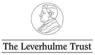
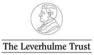

Call for Submissions
Please note that the Call for Submissions for RTD 2015 is now closed. Details of the Call are provided here for archival purposes.
We are excited to invite submissions for the second biennial Research Through Design (RTD) conference, to be held in Cambridge, UK, between the 25th and 27th of March 2015.
Research through Design (RTD) supports the dissemination of practice-based research through a novel and experimental conference format, comprising a curated exhibition of design research accompanied by round-table discussions in ‘Rooms of Interest’. The exhibition will be used as a platform for presenting and demonstrating research processes and outputs, and for generating debate about the role of the design practitioner and their work in a research context. Building on the success of inaugural RTD conference held in Newcastle upon Tyne in 2013, the second conference, RTD 2015, is to be hosted at Microsoft Research’s new European lab in the centre of Cambridge, which promises to be an exciting venue for exploring what design practice means in the early-21st Century.
RTD 2015 aims to foreground the materiality of design research, placing its artefacts, processes, and practices centre stage. We invite submissions from researcher-practitioners documenting research through design projects, including descriptions of methods, processes and insights emerging from a design inquiry and offering a departure point for rich discussion. Criteria for selection are based on the authors’ presentation of artefacts (constituting research process or outcomes) as central to their submission; the artefacts will be included in the curated exhibition, and papers should accompany the exhibited artefact in a presentation of ‘research through design’ at the conference.
Contributions to RTD 2015 may fall under (but are not limited to) the following themes:
- Ways of Making: Experiences, explorations, procedures and aesthetics;
- Ways of Knowing: Methodologies of practice, intentionality and critical thinking;
- Ways of Being: Craft practitioners; researcher identity; engagement and collaboration;
- Process Interrupted: Work in progress; critical reflective practice.
We strongly encourage participation from a wide range of Design disciplines including but not limited to: Product, Industrial, Interaction, Service, Textile, Craft, Jewellery, Fashion, Architecture, Interior, Experience, Film, and those working at the intersection of disciplines such as Human-Computer Interaction or in more emergent fields and practices such as Synthetic Biology.
How to submit to RTD 2015
The submission process is made through the RTD 2015 OpenConf submission system and is split into two stages:
Stage 1:
Authors are invited to submit a 300 word Abstract, accompanied by up to 10 illustrations/photographs/images/figures provided as a single, print quality PDF file by the 4th July 2014. The Abstract should summarise the motivations, intentions and/or outcomes of a ‘research through design’ project, and describe an artefact or documentation representative of this project, intended for inclusion in a curated exhibition at the conference. We invite the submission of diverse material forms of artefact, including film, online media, installation, or live performance. However the artefact – or a component feature of it – must be portable to be flexibly moved between the exhibition space and Rooms of Interest during the conference programme. Abstracts should summarise key aspects of a research through design project, and will be double-peer reviewed by the programme committee (PC).
All abstracts and accompanying PDF files should be submitted via the ‘Make Submission’ option on the RTD 2015 OpenConf submission system. The deadline for submissions is midnight BST (British Summer Time) on the 4th of July.
Please note that Stage 1 of the submissions process is now complete.
Stage 2:
Authors of successful Abstract submissions are invited to submit a detailed account of their work (maximum of 3500 words) via the OpenConf submission system by 24th October 2014 (midnight GMT). If you have been invited to submit to Stage 2, please go to the OpenConf submission website and select 'Make Submission'. Treat Stage 2 as a new submission; please do not try to edit your initial submission on the system.
Stage 2 submissions should comprehensively document a research through design process, describing aims, practice, (intended) outcomes and critical reflections that offer up transferable insights for the RTD community. Authors are strongly advised to consider the conference themes in their submission. Please be reminded that criteria for selection are based on the authors’ presentation of artefacts (constituting research process or outcomes) as central to their submission; the artefacts will be included in the curated exhibition, and papers should accompany the exhibited artefact in a presentation of ‘research through design’ at the conference. Authors are encouraged to leverage visual argumentation in the presentation of their work, combining images alongside text to evidence making and materiality. Authors must be anonymised in submissions.
We advise that authors respond proactively to the comments and suggestions made by the reviewers and the Programme Committee (PC) as part of the Stage 1 peer review process. Bear in mind that Stage 2 submissions will be reviewed in conjunction with the Stage 1 submissions and reviews. It is also important at Stage 2 to offer the reviewers and conference organisers a clear depiction of the artefact intended to be exhibited.
We further encourage authors' creative interpretation of the submission guidelines detailed on this website for best supporting the presentation of their work in alignment with the RTD 2015 themes. Stage 2 submissions should be no more than 3500 words in length and be prepared in print quality PDF format at A4 size, landscape orientation, using the desktop publishing tool of the authors’ choice.
Where appropriate to its content and intent, we are keen to see creative approaches to the format and structure of each submission, however we ask that authors adhere to the basic formatting requests below.
Formatting
Please use Arial font. And please use headings to distinguish the main sections of your paper (such as Introduction, Background, and Conclusion). When considering font sizes, we recommend authors use 10 point minimum for purposes of legibility.
Images & external resources
Bear in mind that final submissions must include print quality images (300 dpi at actual size); we will request these to be submitted separately if your Stage 2 submission is accepted. At Stage 2 submission, however, can authors please compress the PDF to keep the submitted file to a maximum of 20MB. For those unfamiliar with compressing PDF files, here is a simple guide on how this can be achieved here.
Please title and credit photos as necessary in your submission.
Authors who wish to link to external resources and material such as videos must place links in a footnote.
Citations
Ensure that relevant work is cited in submissions at the appropriate points in the text. Please use the Harvard referencing format; find a guide here. In-text citation should appear as (Author Year) and as an alphabetised list at the end of your submission under a heading called References, e.g.: Wallace, J., Yee, J., and Durrant, A. 2014. Reflections on a synergistic format for disseminating research through design. In: Proceedings of CHI ’14 Extended Abstracts, Toronto, 26 April – 1 May 2014, New York: ACM Press, 781-792.
If text from publications or other sources is being quoted, then please quote ‘by using single quotation marks and then citing afterwards as per Harvard format’ (Bloggs 2014).
Anonymity
As a final point, all Stage 2 submission PDFs should be anonymised in reference to author names, affiliations and collaborating organisations.
Further information and requests
Further formatting guidelines will be provided at a later date to the authors whose Stage 2 submissions are selected for inclusion in the RTD 2015 programme.
Following Stage 2, papers and images of the artefacts will be prepared for publication in ISBN digital conference proceedings that will be made available at the conference and on the conference website after the event. Works of exceptional quality will be invited to be part of an edited book that will be published following the conference.
Please note that the Stage 2 Submission deadline has been extended to 24th October 2014.
Copyright
Following Stage 2, authors of accepted work will be asked to agree to it being distributed in an open access manner through the conference website via a Creative Commons Attribution-NonCommercial-NoDerivative 4.0 licence. This will permit the conference organisers to publish the work as part of the online proceedings and in any subsequent publication resulting from the conference, but ensure that the authors retain rights over the intellectual and creative property of the work.
Please note, there are no constraints on the size and dimensions of proposed artefacts at submission. However, a central feature of RTD is that exhibited artefacts are brought into the Rooms of Interest to support discussion. Therefore, when preparing submissions, authors are encouraged to consider transportation logistics and costs, alongside artefact portability and ease of handling at the conference. Venue staff will receive the artefacts from 27th February 2015. If your artefact contains latex or any other known allergen, let us know when submitting and we will negotiate how best to display it if accepted. Authors will be responsible for all shipping costs and insurance of artefacts and for their removal at the end of the conference.
Important Dates
- Stage 1 Submission Deadline: 4th July 2014
- Authors Notified: 3rd September 2014
- Stage 2 Submission Deadline: 24th October 2014
- Authors Notified: 12th December 2014
- Final Paper Submission: 23rd January, 2015
- Artefact Arrival Date: 27th February, 2015
- Conference: 25th to 27th March 2015
If you have any questions related to submitting your work to the conference, please contact the submissions chairs via: submissions@researchthroughdesign.org

 
